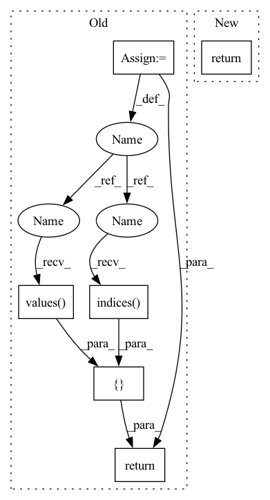

Pattern ID :258

Before Change
return [x.indices, x.values, x.dense_shape]
elif isinstance(x, torch.Tensor):
if x.layout == torch.sparse_coo:
x = x.coalesce()
return [x.indices(), x.values(), ivy.native_array(x.size(), dtype="int64")]
elif x.layout == torch.sparse_csr:
return [
x.crow_indices(),
After Change
new_struc.append(row_split)
return new_struc
elif ivy.is_ivy_sparse_array(x) or ivy.is_native_sparse_array(x):
return ivy.native_sparse_array_to_indices_values_and_shape(x)
def flatten(structure, expand_composites=False):
In pattern: SUPERPATTERN
Frequency: 3
Non-data size: 6
Instances
Fragment ID: 1958205
Project Name: ivy-dl/ivy
Commit Name: a4795de77ccf726e8d5bc9f4735b56359d83def8
Time: 2022-10-26
Author: agni.iyer14@alumni.imperial.ac.uk
File Name: ivy/functional/frontends/tensorflow/nest.py
M Class Name: AnonimousClass
N Class Name: AnonimousClass
M Method Name: _flatten_composite_array(1)
N Method Name: _flatten_composite_array(1)
M Parent Class:
N Parent Class:
M File Name: ivy/functional/frontends/tensorflow/nest.py
N File Name: ivy/functional/frontends/tensorflow/nest.py
M Start Line: 22
M End Line: 36
N Start Line: 20
N End Line: 21
'>
Before Change
"matrix and replacement-row must share the same column number."
row = row.unsqueeze(0)
if not row.is_sparse:
row = row.to_sparse()
if not row.is_coalesced():
row = row.coalesce()
// delete existing indices we dont want
new_indices = matrix.indices()[
:, matrix.indices()[0, :] != row_index]
new_values = matrix.values()[
matrix.indices()[0, :] != row_index]
replacement_row_indices = torch.stack(
[torch.tensor(row_index, device=matrix.device)]*len(row.values()))
replacement_indices = torch.stack([replacement_row_indices,
row.indices()[1, :]])
new_indices = torch.cat([new_indices, replacement_indices], -1)
new_values = torch.cat([new_values, row.values()], -1)
new_matrix = torch.sparse_coo_tensor(
new_indices, new_values, size=matrix.shape,
dtype=matrix.dtype, device=matrix.device)
return new_matrix
if __name__ == "__main__":
After Change
)
result = torch.sparse.mm(removal_matrix, matrix) \
+ addition_matrix
return result
if __name__ == "__main__":
'>
Fragment ID: 1958204
Project Name: v0lta/pytorch-wavelet-toolbox
Commit Name: ced7891d6e879825d3e5dc0d52e2c7fb08b22440
Time: 2021-09-27
Author: moritz@wolter.tech
File Name: src/ptwt/sparse_math.py
M Class Name: AnonimousClass
N Class Name: AnonimousClass
M Method Name: sparse_replace_row(3)
N Method Name: sparse_replace_row(3)
M Parent Class:
N Parent Class:
M File Name: src/ptwt/sparse_math.py
N File Name: src/ptwt/sparse_math.py
M Start Line: 82
M End Line: 107
N Start Line: 82
N End Line: 105
'>
Before Change
return [x.indices, x.values, x.dense_shape]
elif isinstance(x, torch.Tensor):
if x.layout == torch.sparse_coo:
x = x.coalesce()
return [x.indices(), x.values(), ivy.native_array(x.size(), dtype="int64")]
elif x.layout == torch.sparse_csr:
return [
x.crow_indices(),
After Change
new_struc.append(row_split)
return new_struc
elif ivy.is_ivy_sparse_array(x) or ivy.is_native_sparse_array(x):
return ivy.native_sparse_array_to_indices_values_and_shape(x)
def flatten(structure, expand_composites=False):
'>
Fragment ID: 1958203
Project Name: unifyai/ivy
Commit Name: a4795de77ccf726e8d5bc9f4735b56359d83def8
Time: 2022-10-26
Author: agni.iyer14@alumni.imperial.ac.uk
File Name: ivy/functional/frontends/tensorflow/nest.py
M Class Name: AnonimousClass
N Class Name: AnonimousClass
M Method Name: _flatten_composite_array(1)
N Method Name: _flatten_composite_array(1)
M Parent Class:
N Parent Class:
M File Name: ivy/functional/frontends/tensorflow/nest.py
N File Name: ivy/functional/frontends/tensorflow/nest.py
M Start Line: 22
M End Line: 36
N Start Line: 20
N End Line: 21